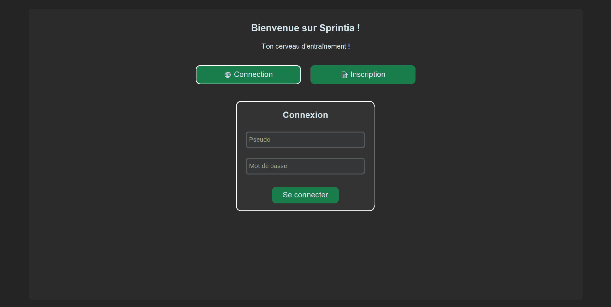
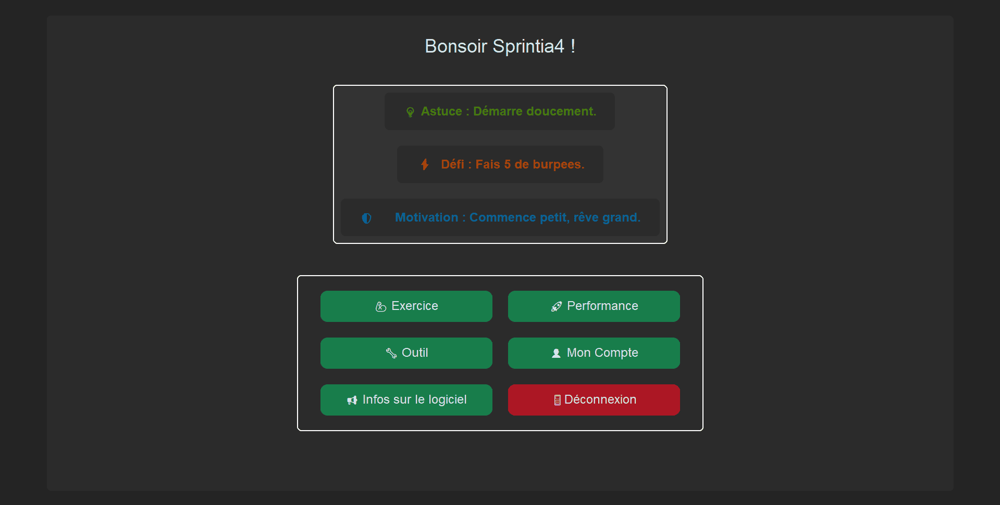
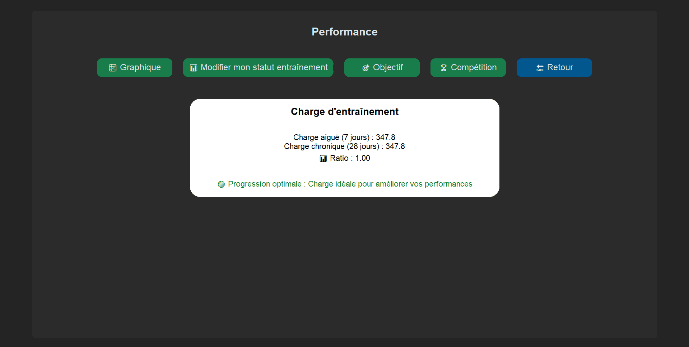

Type : Mise à jour majeure
Date de sortie : 27 Juillet 2025
Cette version apporte enfin une interface graphique. Donc, désormais, plus besoin de taper des commandes dans une console !
Vous pouvez naviguer dans les menus à l'aide de boutons et de champs de saisie. Néanmoins, l'application SPRINTIA
est compatible qu'avec des ordinateurs (Windows, MacOS, Linux).


